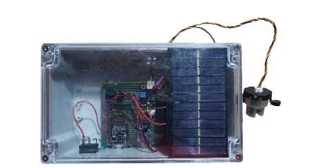
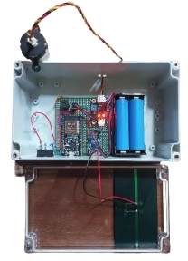
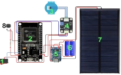
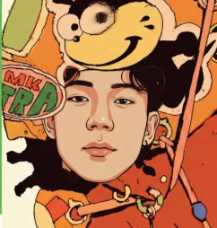
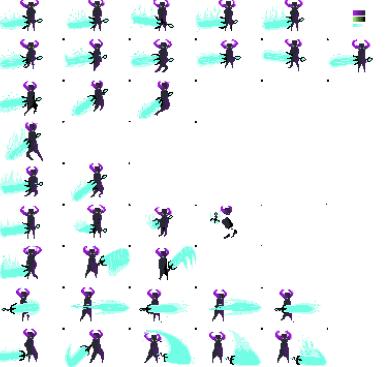
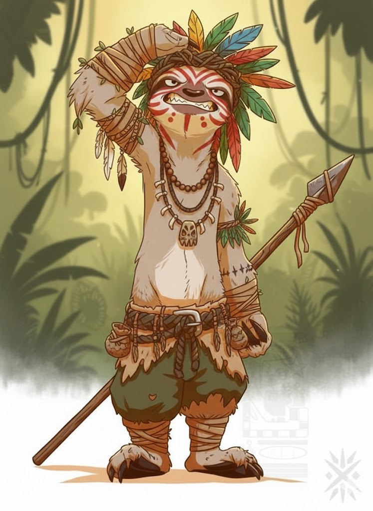
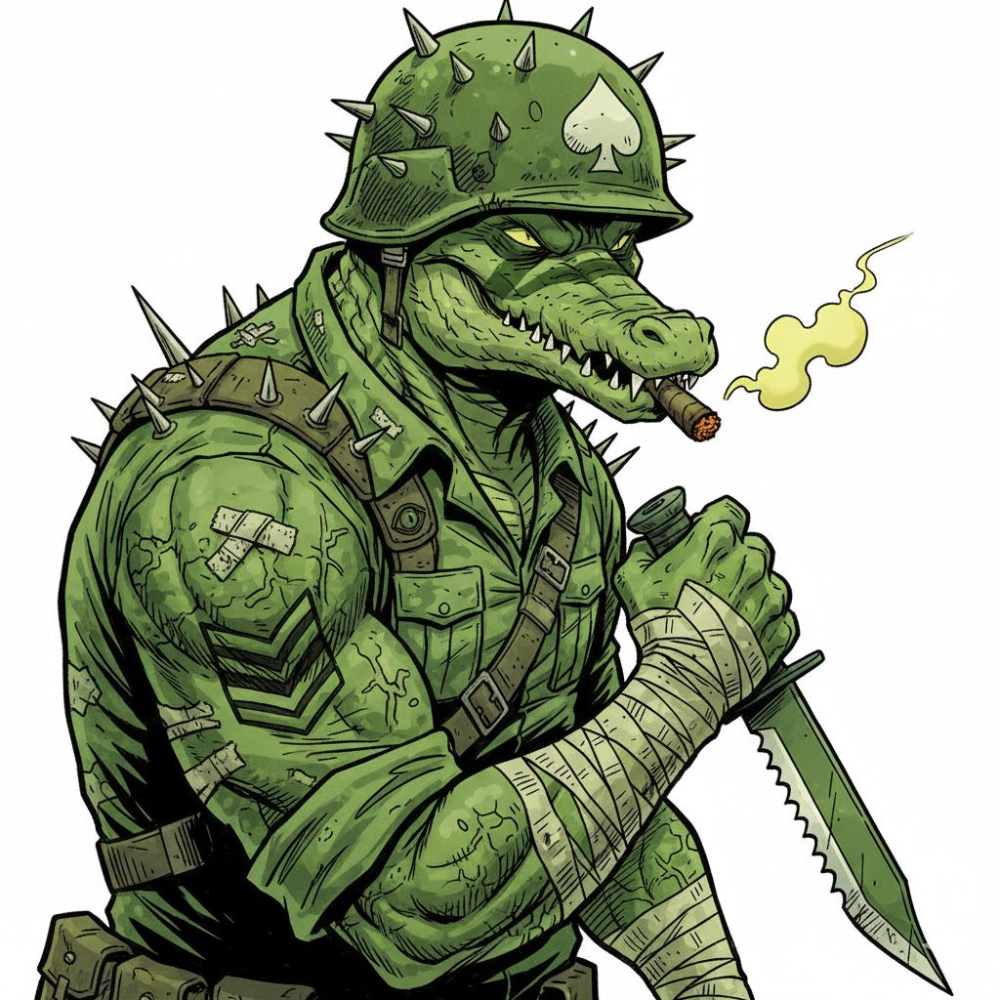
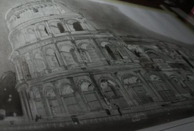
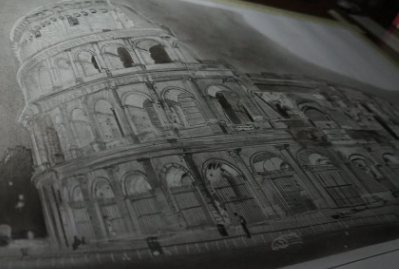

EXPERIENCE

Technical Experience(IT), Networking
(IoT Project)
Water Turbidity Detection With a Smart Water System with Analytics




Creative / Design Experience
Character & Concept Art



Internet of Things • UI/UX Design • Digital Illustration • Hardware Projects • Creative Coding • Networking • Branding • Internet of Things • UI/UX Design • Digital Illustration • Hardware Projects • Creative Coding • Networking • Branding • Internet of Things • UI/UX Design • Digital Illustration • Hardware Projects • Creative Coding • Networking • Branding •

Hobbies
Portrait Drawings.
 
